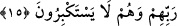

bütün şefâatler sona erince ilâhî rahmet çıkar ve şefâatçi olur da Allâh’ın az da olsa
değer verdiği hiçbir kimse cehennemde kalmaz. Sonra cehennemde kalanların ağlama
sesleri artıp çoğalır. Ardından emir gelir ve kapı üzerlerine kapatılır. Artık oraya ebedî
olarak ne bir rahatlık girebilir, ne de oradan bir gam çıkabilir.”
Ey Rabbim, iki gözümü cehenneme kapat;
Nurunun hakkı için yarın beni ateşte yakma.
15. Bizim âyetlerimize ancak o kimseler inanırlar ki, bunlarla kendilerine öğüt
verildiğinde, büyüklük taslamadan secdeye kapanırlar ve Rablerini hamd ile tesbih
ederler.
Ey günahkârlar! “Onlar şâyet geri döndürülselerdi, muhakkak yasaklandıkları
şeyleri işlemeye yine döneceklerdi.” (el-En‘âm, 6/28) âyetinin haber verdiği şekilde
iddiâ ettiğiniz gibi sizi dünyâya geri döndürsek, siz bizim âyetlerimize îman etmez ve
gereklerine uygun olarak sâlih amel işlemezsiniz. “Bizim âyetlerimize ancak o kimseler
inanırlar ki, bunlarla kendilerine öğüt verildiğinde, büyüklük taslamadan” âyetleri
işitmemiş gibi kibirlenerek ısrar eden kimsenin yaptığı gibi îman ve tâatten yüz çevirip
büyüklenmeden “secdeye kapanırlar.”
el-Müfredât’ta der ki: “ ”, yukarıdan düşen su ve rüzgâr sesine benzer bir ses
”, yukarıdan düşen su ve rüzgâr sesine benzer bir ses
çıkararak düştü, demektir. Âyette bu kelimenin secdeyle ilgili kullanılmış olması, iki
hususun bir arada olduğuna dikkat çekmek içindir: Yukarıdan aşağıya doğru bir
düşme/inme ve secde edenlerden tesbih sesinin çıkması. Ardından “ve Rablerini hamd
ile tesbih ederler” buyrulması ise bu şekilde secdeye kapanmanın başka bir şey ile
değil. Allâh’ı hamd ile tesbih etmek olduğuna dikkat çekmek içindir.”
Yâni onlar Allâh’ın azâbından korkarak secde ettikleri halde yüzleri üstü düşüp yere
kapanırlar “ve” îman, amel ve diğer hususlara muvaffak kılması gibi nîmetlerine karşı
“Rablerini hamd ile tesbih ederler.” O’nu ortağı ve benzeri olmaktan, yeniden
diriltmekten âciz olmaktan ve diğer ona yaraşmayan her şeyden tenzih ederler.
Bu âyetin sonu ittifakla secde mahallidir. Kâşifî der ki: “İmam A‘zam (r.h.)’ın
görüşüne göre bu dokuzuncu secdedir. İmam Şâfiî’nin kavline göre ise onuncu secdedir.
Şeyh-i Ekber (k.s.) bunu tezekkür secdesi olarak bildirmiş ve şunları söylemiştir:
Secde eden kimsenin gâfil olduğu şeyi hatırlaması, bütün eşyada delilleri mevcûd olan
Cenâb-ı Hakk’ın vücûd-ı ahadiyyetine delâlet eden alâmetleri ve âyetleri tasdik etmesi
gerekir.”